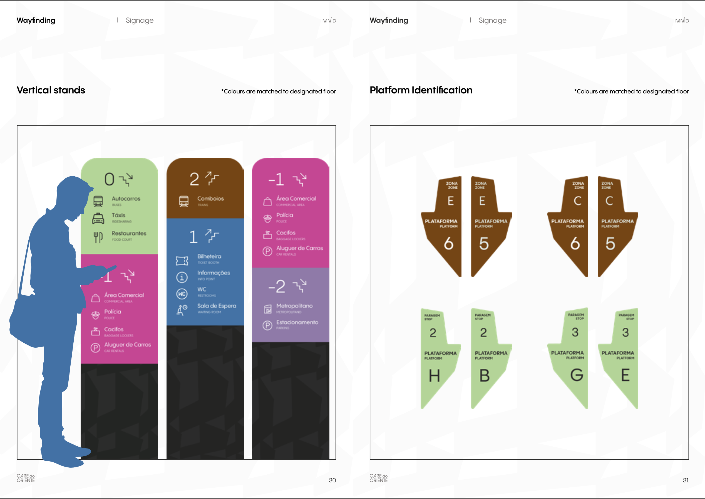
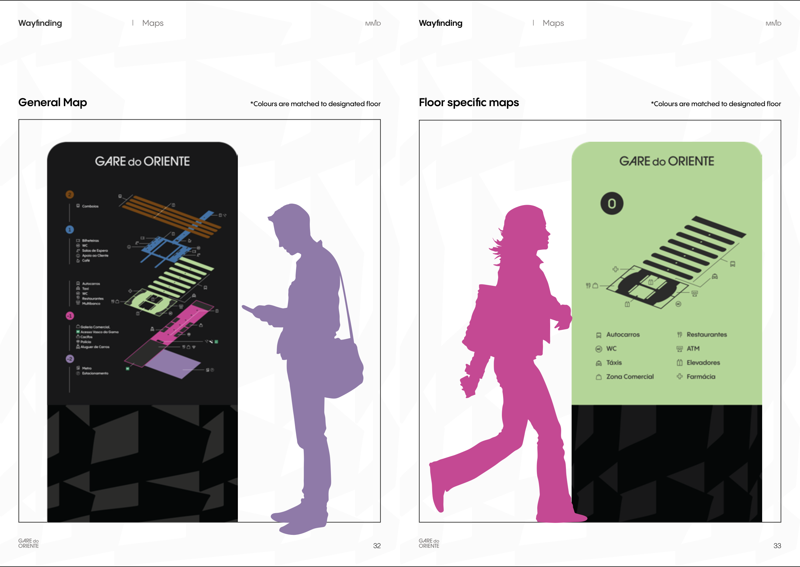
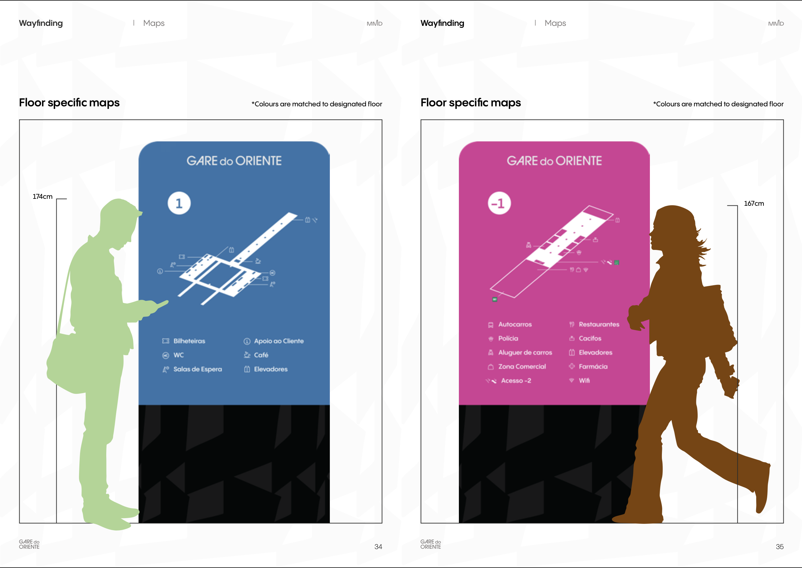
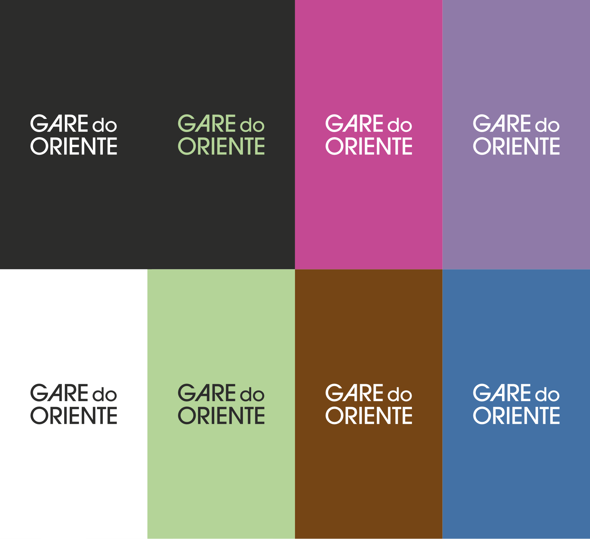
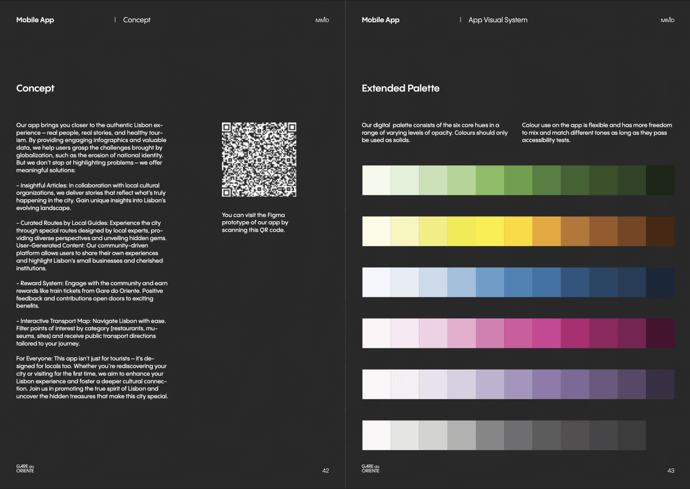

How do you design a wayfinding system for a station that feels more like a sculpture than a place of movement?
Calatrava's Gare do Oriente is monumental, poetic — but difficult. From confusing signage and poorly placed ticket booths to a lack of visual identity, our first visits revealed real navigation challenges. This was more than just signage — it required a complete rethink of the station's presence, both physical and digital.
Our goal: create a user-first identity that restores clarity, builds trust, and turns Gare do Oriente into an intuitive, human-centered transport hub.



"A better hub, for you."Gare do Oriente Design Philosophy
Gare do Oriente's visual identity starts with abstraction — looking at Calatrava’s architecture from new angles, finding meaning in form, and grounding it in accessibility.
Logo Construction
We created a clean, modern wordmark in two formats (stacked and horizontal), designed to remain legible and consistent at small sizes and complex environments.
Color System
We established a palette that balances clarity and energy:


A visual identity only works if it's tested in the real world. We designed and prototyped signage, iconography, maps, and mobile screens across multiple user touchpoints.
From color-coded ceiling signs to platform identifiers and floor-specific maps, each element follows strict alignment and contrast rules to guarantee clarity.
We also developed a companion mobile app, which offers live infographics, curated city routes, and rewards — bringing Gare do Oriente into the digital future.


Our app is more than a companion — it's a full extension of Gare do Oriente's identity, built for both locals and visitors.
- Interactive Transport Map: See live station data, routes, and floor-specific guidance.
- Curated Local Routes: Discover Lisbon through themed walking tours created by residents.
- User-Generated Content: Share discoveries, stories, and small businesses through a community-driven feed.
- Reward System: Earn points for engaging with the city — and redeem them for real transport benefits.



Our method combined immersive research with practical design iteration — turning insights into tested solutions.
Site Visits & Interviews
We visited the station multiple times, documenting wayfinding gaps, talking to staff, and measuring key circulation zones.
Component Design
Shapes were extracted from the architecture and aligned to a pixel grid to ensure consistency across digital and physical media.
System Prototyping
We created signage mockups, a digital prototype in Figma, and 3D renders using SketchUp and Enscape to visualize the full system in use.
Refinement & Testing
Typography, colors, and layout grids were optimized based on accessibility, contrast, and placement guidelines.